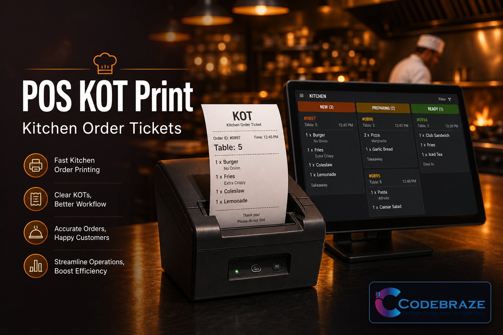
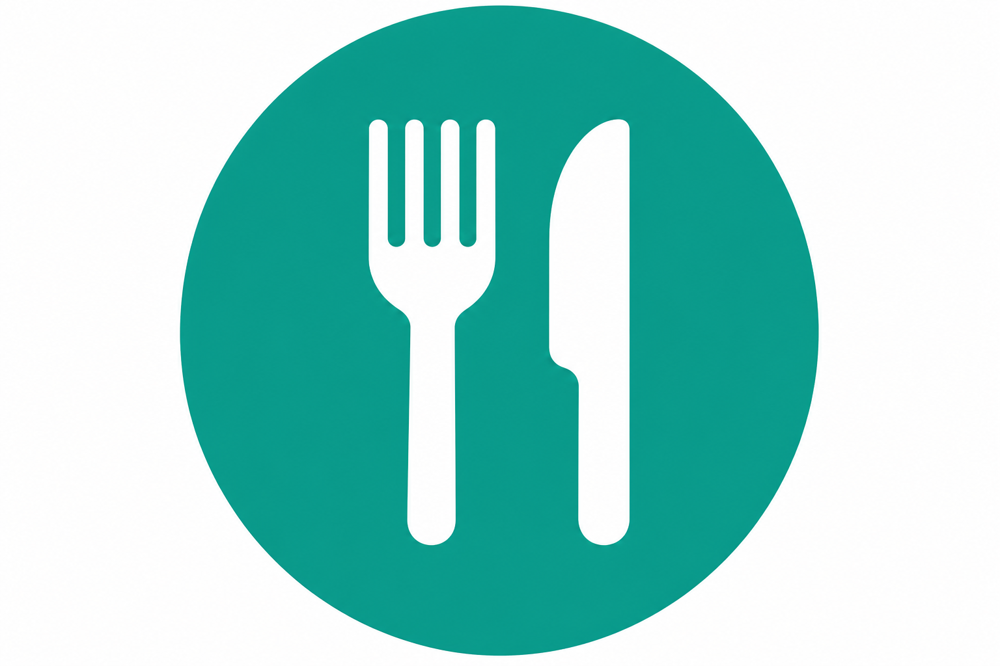
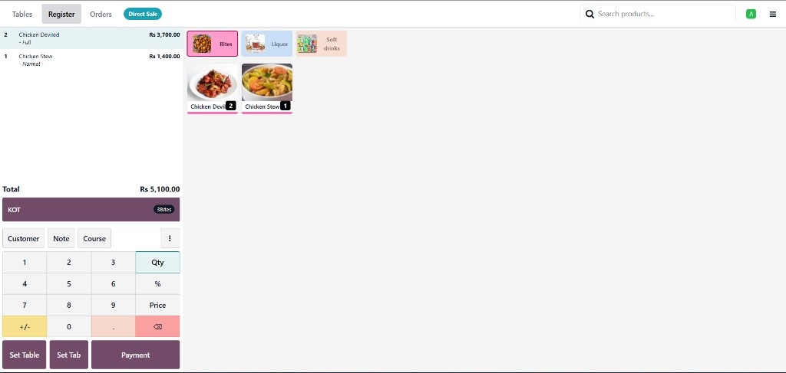

Preview & Print Wizard

Preview the kitchen ticket in the wizard, then print with one click.


A dedicated KOT button and preview wizard for restaurants and bars. Print clear kitchen tickets on your 80mm receipt printer (Epson, IoT Box, or browser) without configuring separate Order Printers.

The full-width KOT bar on the order screen shows pending kitchen items by category.
Preview the kitchen ticket in the wizard, then print with one click.
Full-width KOT bar on the order screen shows pending kitchen items by category. The standard Send button stays unchanged for the normal kitchen flow.
Click KOT to open a wizard on top of the current order screen. Review the ticket, then print or go back to the order.
Mark only the products that need a kitchen ticket with the KOT Product checkbox on the product form.
Uses the same receipt printer pipeline as Odoo POS (Epson ePOS, IoT Box, or browser print fallback). Company name and KITCHEN ORDER header on every ticket.
Enable Other Devices and set the Epson Printer IP.
Connect the 80mm ESC/POS printer and set the IoT Box IP.
Use the browser print dialog and select your 80mm printer.
Requires Point of Sale, Restaurant, and Settle Due (pos_settle_due — Odoo Enterprise).
For support requests: sales@codebraze.com
Built for Odoo 19 · License LGPL-3 · Author CodeBraze